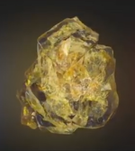

| Soul |
Orange |
According to Wong's ancient texts, the Soul Stone could prove to be the greatest threat out of all the Infinity Stones. Gamora knew of the location of the Soul Stone from a map she found to its whereabouts (which she burnt) but kept this a secret from Thanos. |
 |
| Time |
Green |
The Eye of Agamotto is an ancient artifact, a pendant created by Agamotto, the first Sorcerer Supreme, presumably to contain and harness the power of the green Time Stone contained inside. After being stored for an unknown amount of time on a pedestal in Kamar-Taj, it was recently wielded by Doctor Stephen Strange, first to aid him in his learning of sorcery, then in his final fight against Kaecilius and Dormammu. |
 |
| Space |
Blue |
The Aether appears as a dark, red, viscous liquid. It acts as a symbiotic force, capable of being absorbed into the body of a living host, giving the user the ability to warp reality at will, granting that person immense strength, durability, powers, and subjective influence over the universe. Malekith planned to use the Aether's reality-bending abilities to cover all Nine Realms in darkness; however, he was stopped by the combined efforts of Thor and Jane Foster. |
 |
| Mind |
Yellow |
The Scepter was a weapon that utilized the yellow Mind Stone housed inside a blue computer module, which also masked the stone's presence.
Stark originally saw the Stone as a power source, whereas once J.A.R.V.I.S.
had the opportunity to study the stone he stated it was more akin to a very powerful computer.
The stone within had already been in the possession of Thanos when he gave it to Loki to aid him in his invasion of Earth.
It grants to the user powerful mental abilities, like the power to subjugate the minds of others, bending them to the will of the user,
as well as project the user's consciousness to a higher plane of existence. |
 |
| Reality |
Red |
The Aether appears as a dark, red, viscous liquid. It acts as a symbiotic force, capable of being absorbed into the body of a living host, giving the user the ability to warp reality at will, granting that person immense strength, durability, powers, and subjective influence over the universe. Malekith planned to use the Aether's reality-bending abilities to cover all Nine Realms in darkness; however, he was stopped by the combined efforts of Thor and Jane Foster.
|
 |
| Power |
Purple |
The Tesseract is named for its cube-like appearance and is capable of controlling space itself,
providing the user instant access to any location throughout the universe if used correctly.
The unique element that composes the Tesseract has also been used to create advanced weaponry by races like the Humans.
This stone played an important role in humanity's development during the dawn of the superhero age, attracting the attention of forces such as Red Skull and Thanos, both of whom sought to use the Tesseract's power for their own sinister intents.
It is later revealed that the cube is a containment unit built around the actual Infinity Stone so that it could be somewhat safely handled and controlled. |
 |
|
marvelcinematicuniverse.fandom.com/wiki/Infinity_Stones
|